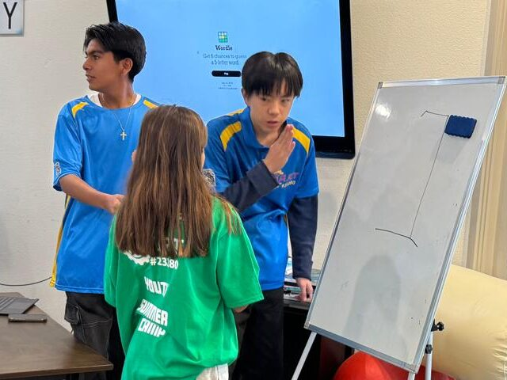
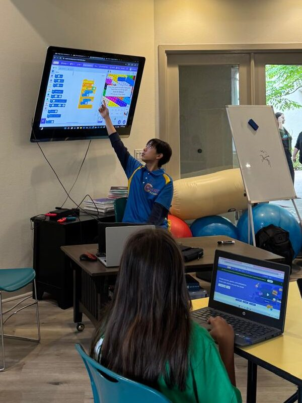
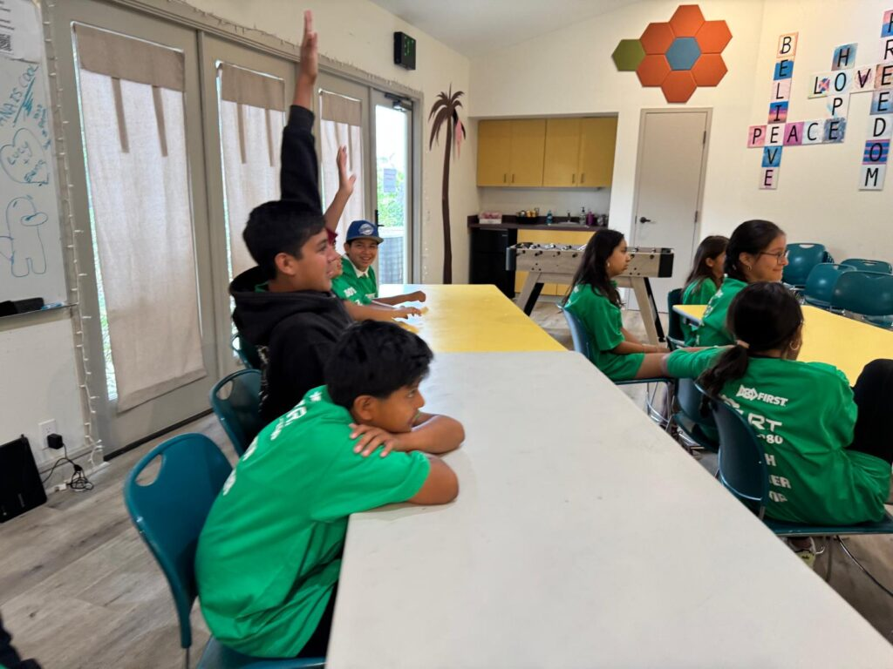
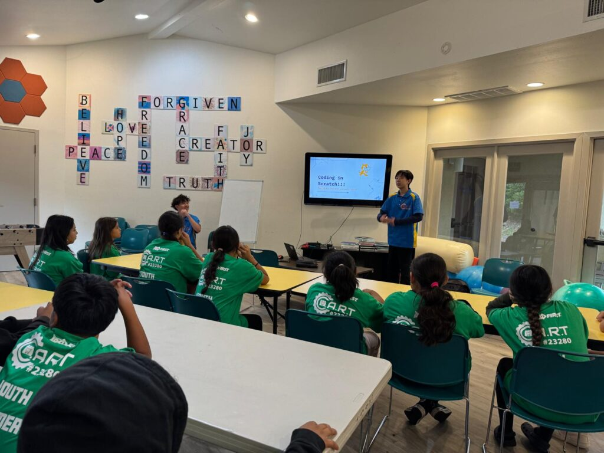

July 14th, 2025
In a world where technology continues to shape our future, equitable access to STEM education remains a pressing challenge. For many students from underrepresented communities, opportunities to explore coding and app development are limited, creating barriers that can last a lifetime. This is where passionate youth leaders like Alex Tang, founder of the ESC Club and a two-time Congressional App Challenge winner, are making a transformative impact.

Recently, Alex collaborated with FTC C.A.R.T. Robotics and Casa de Amistad, a grassroots nonprofit organization serving families in North County San Diego, to host an engaging introductory coding class. Casa de Amistad stands out for its unwavering commitment to supporting children and families affected by educational inequalities, aligning perfectly with ESC Club’s mission to foster multicultural communication and promote equal opportunities in STEM education.

The outreach event welcomed 20 enthusiastic students, ranging from elementary to middle school, many from Latino backgrounds. For most of these students, this was their first experience with coding—an eye-opening moment that bridged the digital divide. Understanding the significance of this opportunity, Alex spent countless hours the night before designing a curriculum tailored to younger, entry-level learners. His slide deck was colorful, simple, and interactive, ensuring that students could follow along easily without feeling overwhelmed.

During the session, Alex’s teaching approach shone brightly. He paced the lesson carefully, watching each student’s progress and making sure no one was left behind. To keep the energy high and engagement strong, Alex incorporated quizzes and fun questions, turning what could have been a technical session into a lively and collaborative experience. Students weren’t just passive listeners—they were active participants, building confidence with every step.
The outcome? A resounding success. Laughter and excitement filled the room as the children proudly showcased their first coded projects. Many expressed their eagerness to join future classes, marking the beginning of what could be a lifelong interest in technology. For some, it wasn’t just about learning coding—it was about seeing a path toward new possibilities and understanding that STEM is for everyone, regardless of background.
This event exemplifies what happens when passionate youth leaders, community organizations, and STEM initiatives join forces. Alex’s dedication, from midnight preparation to patient instruction, reflects his belief in the ESC Club’s core value: “Inspired by Humanity and Empowered by Technology.” Through efforts like this, barriers break down, opportunities expand, and young minds are ignited with curiosity and hope.

The partnership between ESC Club, FTC C.A.R.T. Robotics, and Casa de Amistad is more than an outreach event—it is a movement toward equity in education. Together, they are proving that when we invest in inclusive STEM programs, we build not only skills but also a brighter, more connected future for all.